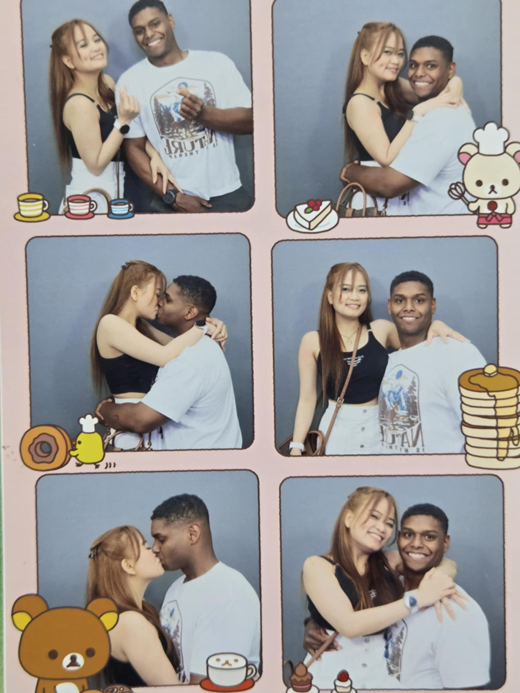

Tito Nathan, I see. I understand a little more now, and I can tell this is not something you said carelessly. I know you are trying to look at this with God in your heart, and I truly respect that. I also know you are not trying to hurt Tita. I know that, in your own way, you are trying to protect her, even if the decision itself is painful
I just hope you allow me to say this gently, not to change your mind, not to guilt you, and not to question your prayers. I am still young, and as a young Christian myself, I know I still have so much to learn about love, sacrifice, obedience, and discernment. But I also believe God allows people around us to speak with love sometimes, not to control us, but to help us see the heart of someone who may not be able to explain herself clearly
As I said earlier, I woke up and caught a glimpse of Tita crying. She tried to hide it, but it was very obvious that she was hurting so much. She was so overwhelmed last night that she ended up drinking and crying until her body just gave in. I am not saying that to make you feel guilty. I am only saying it because I saw how deep the pain was, and I know that pain came from a place of genuine love
You know Tita. She is not always good at explaining her heart in English. Sometimes she understands what she feels, but she cannot express it clearly. Sometimes the words come out wrong, or too simple, or incomplete. So please allow me, as her nephew, to speak a little for her. Not to influence the situation, not to convince you, but to help you see the side of her heart that she may not be able to explain well
From the time she came back here after her work in Korea, I remember asking her about you. She told me you were different. She said you were the one for her. She said you understood her, cared for her, and trusted her. That meant so much to her because her life has not been easy, and her work is not something many people can understand kindly.
Tita is a singer. That is what she knows. Since she was young, that has been the skill she had to earn and survive. You of course knew that if there is a schedule at night, she works. Sometimes she sings in places where she has to entertain guests, smile even when she is tired, and deal with situations that are uncomfortable, not because that is the life she dreams of, but because that is the life she learned to survive in. That was the way she knew how to provide for the family. And I know out of all people, you understand this side of her better than anyone
But ever since she met you, I saw her commited to change. Not because someone forced her, and not just for appearance, but because she wanted to become more compatible with the life she believed she could build with you. She committed herself to changing her ways, her habits, and even the kind of work she does, because she valued you and the relationship so much. She wanted to honor what you both had. She wanted to be worthy of the peace you gave her
She always told me that with you, she felt trusted. She would say, “Si Tito Nathan mo, kahit hindi ko i-update oras-oras, ayos kami. Kaya sa kanya ako, kasi iba talaga siya.” What she meant was that with you, she did not feel controlled. She did not feel judged immediately (even if he says this a lot lately HAHA, because she mistakenly feeling being distrusted by you). But overall and the majority of your time together, she did not feel like she had to defend herself every second. You gave her a kind of peace that she was not used to receiving
And I think that is why she loved you so deeply. Because for someone like Tita, who spent so much of her life carrying responsibilities, working for the family, and trying to survive, peace is not a small thing. To be understood is not a small thing. To be trusted is not a small thing. You became someone who made her feel that maybe life could still be gentle to her
I often ask her if she would live with you at US when you both get married. She always says she would love to, but she is also unsure because her whole life has been tied to her responsibilities here. She thinks about the family first. She thinks about Jay and Daran. She thinks about everyone before herself. she does not even know how to begin choosing her own happiness because she has been living for other people for so long
And I always tell her that when the time comes, she should go. She should finally live the life she prayed for. I tell her we will be okay here, that I will do my part, that I will take care of what I can, and that she does not have to carry us forever. That sooner, it will be our time to take on the mantle and end this curse whatsoever. One of my quiet prayers is to see her finally rest. To see her retire from dangerous nights and difficult work. To see her live a life where she is loved, protected, and not always forced to be strong. To live with you
That is why it hurts to see her like this. Because for many years, I saw her survive more than live. After everything she went through before, especially after the breaking of her previous marriage, I did not always see peace in her. I saw strength, yes. I saw sacrifice, yes. But peace was rare. With you, I saw peace come back
I know there are things that are difficult. I know the annulment process is still there, and I know some parts of it are beyond her control because the other decision is with the other person involved. I know distance is hard. I know military life is hard. I know you also carry your own loneliness, responsibilities, prayers, and fears. I do not want to make it seem like only her pain matters, because your heart matters too. Your peace matters too. Your future matters too. Your family matters too
I just hope you can see that Tita did not choose you lightly. She did not choose you because she had no one else. She did not choose you because she was just lonely. She chose you because she saw in you a man who understood her heart beyond her broken English, beyond her work, beyond her past, and beyond the complicated parts of her life
As I stated, as a young Christian, I know I still have so much to learn. I do not want to pretend that I understand everything about love, marriage, sacrifice, or God's will. But one thing I am slowly learning is that God is not only found in the easy path. Sometimes, He also works through patience, waiting, healing, and two people choosing to grow together
I heard something before in my first years of attending church that stayed with me. There will always be someone better in some way. Someone closer. Someone easier to love. Someone with fewer complications. Someone with a cleaner situation. Someone who seems more ready. But if love is always measured by who is easier, then maybe we will keep searching forever. Sometimes love becomes real when we pray, listen, and still choose with grace, even when the road is not simple
I am not saying this to change your mind. I am not saying this to pressure you. I do not want you to stay out of pity, guilt, or obligation. That would not be love, and I know Tita would not want that either
I only hope that if part of you is stepping away because you believe she deserves someone better, maybe you can gently consider that she has already seen goodness in you. Maybe she is not asking for a perfect man. Maybe she is asking for the man she prayed for, the man who made her feel safe enough to change, hope, and believe again. God is a Father. He is personal. He listens not only to what is right in theory, but also to the honest cries of His children. His power is not limited by distance, paperwork, timing, fear, or past mistakes. If He wants to make a way, He can. And if He is asking both of you to surrender, He can also give peace for that. I do not know His full answer. I can only pray that whatever decision is made, it comes from peace, not fear; from love, not pain; from faith, not the feeling that one of you is not enough
If after praying, you still truly believe that letting go is what God is leading you to do, I will respect that. I know Tita will be broken, but we will help her stand again. I know you would not choose that lightly
But if there is still a part of your heart that loves her, still sees her, still believes that God can help both of you grow through this, then I hope you do not decide too quickly that she needs another man. I hope you also allow her heart to have a voice in that prayer
Because from what I see here, Tita is not looking for someone else
She has chosen you
And with all respect for your heart, your faith, and your decision, I hope you choose her too

With all my respect,
— Rasty